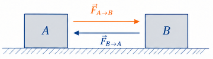

1º Ano | Aula 18: 3ª Lei de Newton (Ação e Reação)
📚 Resumo
A 3ª Lei de Newton (Princípio da Ação e Reação) afirma que, quando um corpo $A$ exerce uma força sobre um corpo $B$, este responde exercendo sobre $A$ uma força de mesma intensidade, mesma direção e sentido oposto.
Relação Vetorial: $$\vec{F}_{A \to B} = -\vec{F}_{B \to A}$$
Importante: As forças de ação e reação nunca se anulam, pois atuam em corpos distintos.
📖 3ª Lei de Newton: Princípio da Ação e Reação
1. O Princípio das Interações
A Terceira Lei de Newton estabelece que forças são o resultado da interação entre dois corpos. Nenhuma força pode existir isolada na natureza. Matematicamente, as forças trocadas entre dois corpos $A$ e $B$ atendem às seguintes condições:
Relação Vetorial: $$\vec{F}_{A \to B} = -\vec{F}_{B \to A}$$
Um par de ação e reação possui características fundamentais obrigatorias:
Mesmo módulo: Ambas as forças possuem a mesma intensidade.
Mesma direção: Atuam ao longo de uma mesma reta de ação.
Sentidos opostos: Apontam para direções contrárias na reta de ação.
Atuam em CORPOS DIFERENTES: Como a força de ação atua em um corpo e a de reação em outro, elas jamais se anulam.
Mesma natureza: Ambas são de contato ou ambas são de campo.

Figura 1: A força exercida pelo bloco A sobre o bloco B tem rigorosamente o mesmo módulo, porém sentido oposto à força exercida por B em A.
2. A Importante Distinção: Peso ($\vec{P}$) e Normal ($\vec{N}$)
Um erro conceitual recorrente é considerar que o Peso e a Normal formam um par de ação e reação. Veja o porquê de não serem:
Atuam no mesmo corpo: Tanto a força Peso quanto a força Normal atuam sobre o bloco apoiado.
Naturezas distintas: A força Peso é de origem gravitacional (campo), enquanto a Normal é eletromagnética (contato entre superfícies).
Quem são os pares corretos?
O par do Peso $\vec{P}$ do bloco é a atração gravitacional exercida pelo bloco no centro do planeta Terra ($-\vec{P}$).
O par da Normal $\vec{N}$ recebida pelo bloco é a força de compressão que o bloco exerce sobre a superfície de apoio ($-\vec{N}$).
3. Propulsão por Reação
Para haver deslocamento ou aceleração via ação e reação, a interação empurra o meio no sentido oposto ao movimento desejado (ao caminhar, o pé empurra a Terra para trás e o chão empurra a pessoa para a frente).
💡 Física em Ação
🚀 Lançamento de Foguetes
O foguete não "empurra o ar" para subir. Os gases em expansão são expelidos para baixo pela câmara de combustão (Ação), e a força com que esses gases empurram o próprio foguete para cima gera a propulsão (Reação), mesmo no vácuo espacial.
🏊 Natação e Locomoção
Um nadador empurra a água para trás com as mãos e os pés (Ação). A água empurra o corpo do nadador para a frente (Reação). Quanto maior a força aplicada na água, maior será a aceleração gerada no atleta.
✅ 5 Questões Resolvidas (R 1 a 5)
R 1: O Par de Forças do Caminhar
Enunciado: Explique, com base na 3ª Lei de Newton, o mecanismo físico que permite a uma pessoa caminhar sobre uma superfície horizontal.
Resolução: Ao caminhar, o pé da pessoa empurra o chão para trás através da força de atrito (Ação). Simultaneamente, o chão reage empurrando o pé da pessoa para a frente com uma força de atrito de mesmo módulo, mesma direção e sentido oposto (Reação). Essa força exercida pelo chão é a responsável por impulsionar a pessoa para a frente.
R 2: Transmissão de Força Entre Blocos
Enunciado: Dois blocos $A$ ($m_A = 2\text{ kg}$) e $B$ ($m_B = 3\text{ kg}$) estão apoiados sobre um plano horizontal sem atrito. Uma força horizontal de $20\text{ N}$ é aplicada no bloco $A$, empurrando o conjunto. Determine a aceleração do sistema e o módulo da força de contato trocada entre os blocos $A$ e $B$.
Resolução: Primeiro, calcula-se a aceleração do conjunto considerado como massa total ($m_T = 2 + 3 = 5\text{ kg}$):
$$F = m_T \cdot a \implies 20 = 5 \cdot a \implies a = 4\text{ m/s}^2$$
Para encontrar a força de contato $F_{A \to B}$ exercida por $A$ em $B$, aplica-se a 2ª Lei no bloco $B$ isolado:
$$F_{A \to B} = m_B \cdot a \implies F_{A \to B} = 3\text{ kg} \cdot 4\text{ m/s}^2 = 12\text{ N}$$
Pela 3ª Lei de Newton, a força que $B$ reage em $A$ possui módulo de $12\text{ N}$.
R 3: Cancelamento de Forças
Enunciado: Se a força de ação é sempre igual e oposta à força de reação, por que as duas forças não se anulam resultando sempre em repouso?
Resolução: As forças de ação e reação não se anulam porque atuam em corpos distintos. Para que duas forças se anulem (resultando em força resultante nula), elas precisam obrigatoriamente estar sendo aplicadas no mesmo corpo.
R 4: Tração em Cabo e Reação
Enunciado: Um guindaste puxa verticalmente para cima um bloco de massa $500\text{ kg}$ imprimindo-lhe uma aceleração para cima de $2\text{ m/s}^2$. Dado $g = 10\text{ m/s}^2$, determine a força de tração no cabo e identifique o corpo onde atua a reação dessa força de tração.
Resolução: Força peso do bloco $P = m \cdot g = 500 \cdot 10 = 5000\text{ N}$.
Pela 2ª Lei de Newton no bloco:
$$T - P = m \cdot a \implies T - 5000 = 500 \cdot 2 \implies T = 6000\text{ N}$$
A força de tração de $6000\text{ N}$ puxa o bloco para cima. Sua reação de $6000\text{ N}$ atua diretamente no cabo do guindaste (puxando-o para baixo).
R 5: Colisão entre Objetos de Massas Diferentes
Enunciado: Um caminhão de massa $8000\text{ kg}$ colide frontalmente com um carro de passeio de massa $1000\text{ kg}$. Compare a intensidade da força recebida pelo caminhão com a força recebida pelo carro no instante do impacto.
Resolução: De acordo com a 3ª Lei de Newton, no instante do impacto, o módulo da força exercida pelo caminhão sobre o carro é rigorosamente igual ao módulo da força exercida pelo carro sobre o caminhão ($F_{caminhão \to carro} = F_{carro \to caminhão}$). A diferença nos estragos deve-se ao fato de que o carro, possuindo menor massa, sofrerá uma desaceleração muito mais severa ($a = \frac{F}{m}$).
✍️ 5 Questões Propostas (P 6 a 10)
P 6: Reação do Peso
Enunciado: Um livro de $1,5\text{ kg}$ está em repouso sobre uma mesa horizontal. Onde está aplicada e qual a intensidade da reação da força Peso desse livro? (Adote $g = 10\text{ m/s}^2$).
Resolução: O módulo da força peso é $P = m \cdot g = 1,5 \cdot 10 = 15\text{ N}$.
Como o Peso é a força de atração exercida pela Terra sobre o livro (para baixo), a reação tem intensidade de $15\text{ N}$, está direcionada para cima e fica aplicada no centro da Terra.
P 7: Empurrão de Dois Blocos
Enunciado: Dois caixotes $A$ e $B$, de massas $m_A = 6\text{ kg}$ e $m_B = 4\text{ kg}$, estão em contato sobre uma superfície sem atrito. Uma força $F = 50\text{ N}$ é aplicada horizontalmente em $A$. Qual o módulo da força de interação mantida entre os dois caixotes?
Resolução: Aceleração do conjunto ($m_T = 6 + 4 = 10\text{ kg}$):
$$50 = 10 \cdot a \implies a = 5\text{ m/s}^2$$
Força de contato exercida sobre $B$:
$$F_{A \to B} = m_B \cdot a = 4\text{ kg} \cdot 5\text{ m/s}^2 = 20\text{ N}$$
P 8: Força em Cabo Único
Enunciado: Dois patinadores $A$ ($60\text{ kg}$) e $B$ ($40\text{ kg}$) estão em uma pista de gelo sem atrito segurando as extremidades de uma corda. Se o patinador $A$ puxa a corda com uma força de $80\text{ N}$, qual é a aceleração adquirida pelo patinador $B$?
Resolução: A tração de $80\text{ N}$ é transmitida pela corda até o patinador $B$.
Aplicando $F = m_B \cdot a_B$:
$$80 = 40 \cdot a_B \implies a_B = 2\text{ m/s}^2$$
P 9: Identificação do Par Ação-Reação
Enunciado: Um homem empurra uma parede vertical aplicando uma força de $150\text{ N}$ para a direita. Descreva o módulo, a direção e o sentido da força de reação recebida pelo homem.
Resolução: A força de reação exercida pela parede sobre o homem possui:
- Módulo: $150\text{ N}$
- Direção: Horizontal
- Sentido: Para a esquerda (oposto ao empurrão)
P 10: Salto e Terceira Lei
Enunciado: Ao saltar para cima, uma pessoa de $70\text{ kg}$ empurra o solo para baixo com uma força média de $1000\text{ N}$. Sabendo que o peso da pessoa é $700\text{ N}$, qual é a força resultante atuando na pessoa no instante do impulso?
Resolução: Ao empurrar o solo para baixo com $1000\text{ N}$ (Ação), o solo empurra a pessoa para cima com uma reação $N = 1000\text{ N}$.
Como a força Peso de $700\text{ N}$ atua para baixo, a força resultante para cima é:
$$F_{res} = N - P = 1000 - 700 = 300\text{ N}\text{ (para cima)}$$
🎓 TESTES (T 11 a 15)
T 11: (PUC-MG) Motivo do Não Cancelamento
De acordo com a terceira lei de Newton, a toda força corresponde outra igual e oposta, chamada de reação. A razão por que essas forças não se cancelam é:
A) elas agem em objetos diferentes.
B) elas não estão sempre na mesma direção.
C) elas atuam por um longo período de tempo.
D) elas não estão sempre em sentidos opostos.
E) elas têm módulos diferentes quando há movimento.
Resolução: Alternativa A.
Forças só se anulam se estiverem sendo aplicadas no mesmo corpo. Como ação e reação atuam em corpos distintos, elas nunca podem se anular mutuamente.
T 12: (IFSC) Agentes da Interação
Um pássaro está em pé sobre uma das mãos de um garoto. É CORRETO afirmar que a reação à força que o pássaro exerce sobre a mão do garoto é a força:
A) da Terra sobre a mão do garoto.
B) do pássaro sobre a mão do garoto.
C) da Terra sobre o pássaro.
D) do pássaro sobre a Terra.
E) da mão do garoto sobre o pássaro.
Resolução: Alternativa E.
Para achar o par de ação e reação, inverte-se os corpos interagentes. Se a ação é do pássaro na mão, a reação é obrigatoriamente da mão no pássaro.
T 13: (UFRGS) Sistema de Blocos em Encosto
Dois blocos $A$ e $B$ de massas $m_A = 3\text{ kg}$ e $m_B = 1\text{ kg}$, apoiados sobre uma superfície horizontal sem atrito, são empurrados por uma força horizontal $F = 12\text{ N}$ aplicada no bloco $A$. A força exercida pelo bloco $A$ sobre o bloco $B$ tem intensidade igual a:
A) $12\text{ N}$
B) $9\text{ N}$
C) $6\text{ N}$
D) $3\text{ N}$
E) $1\text{ N}$
Resolução: Alternativa D.
Massa total $m_T = 3 + 1 = 4\text{ kg}$.
Aceleração: $12 = 4 \cdot a \implies a = 3\text{ m/s}^2$.
A força de $A$ em $B$ acelera o bloco $B$:
$$F_{A \to B} = m_B \cdot a = 1\text{ kg} \cdot 3\text{ m/s}^2 = 3\text{ N}$$
T 14: (UNESP) Forças de Colisão
Um automóvel colide frontalmente contra um muro de concreto. Durante a colisão, a força que o muro exerce sobre o automóvel é $F_1$ e a força que o automóvel exerce sobre o muro é $F_2$. Comparando essas duas forças, é correto afirmar que:
A) $F_1 > F_2$, pois o muro permanece intacto.
B) $F_1 < F_2$, pois o automóvel é deformado.
C) $F_1 = F_2$, pelo Princípio da Ação e Reação.
D) $F_1 = F_2 = 0$, pois as forças se cancelam durante o choque.
E) a relação entre $F_1$ e $F_2$ depende exclusivamente da velocidade no instante do choque.
Resolução: Alternativa C.
Pela Terceira Lei de Newton, em qualquer colisão ou interação mecânica, os módulos das forças trocadas são rigorosamente iguais ($F_1 = F_2$).
T 15: (FUVEST) Tensão em Fio Comum
Um homem puxa um caixote de $20\text{ kg}$ através de um fio leve e inextensível, aplicando uma força de $100\text{ N}$. Desprezando o atrito, a força de reação exercida pelo fio sobre a mão do homem tem módulo de:
A) $0\text{ N}$
B) $20\text{ N}$
C) $50\text{ N}$
D) $100\text{ N}$
E) $200\text{ N}$
Resolução: Alternativa D.
Pela 3ª Lei de Newton, se a mão do homem aplica uma força de $100\text{ N}$ sobre o fio (Ação), o fio exerce instantaneamente sobre a mão do homem uma força de tração de módulo igual a $100\text{ N}$ em sentido oposto (Reação).